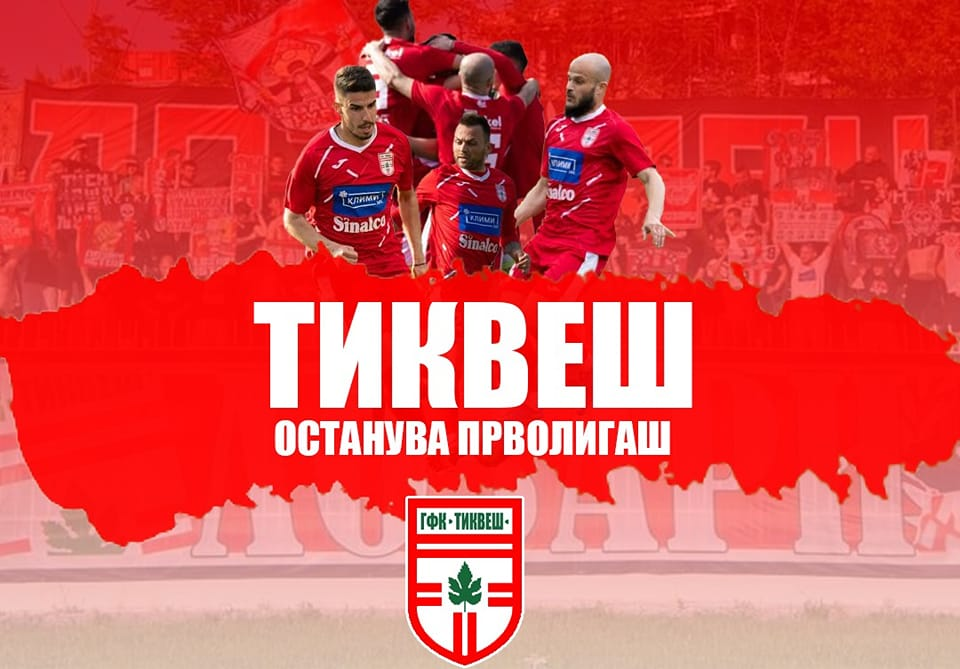

Како и секој фудбалски клуб и ФК Тиквеш во текот на своето долгогодишно постоење има доживеано бројни победи,
но и бројни порази. Сезоната 2021/2022 Тиквеш ја започна со игра против ФК Шкендија која заврши нерешено. Потоа следуваа натпреварите
со Академија Пандев, Борец и ФК Работнички, на кои утакмици Тиквеш се здоби со порази.
И во следните неколку натпревари Тиквеш се бореше да стигне барем до резултат нерешено, со цел
да добие поен во табелата на Првата Македонска Фудбалска лига. Со повеќе последователни порази,
местото на Тиквеш на табелата одеше се подоле и подоле и со тоа клубот се оддалечуваше од опстанок
во Првата лига.

Натпреварот со ФК Борец беше уживање за навивачите и публиката, кога клубот го совлада противникот
со резулат 5-0. На овој натпревар клубот постигна најмногу голови во еден натпревар во текот на целата сезона.
Стрелци беа играчите Андреј Лазаров (2гола), Иван Ивановски, Благоја Љамчевски и Александар Мишов. На последниот натпревар од сезоната Тиквеш успеа
да доминира и над ФК Македонија ЃП, па така се здоби со уште 3 поени со оваа победа.

Во текот на сезоната поразите за клубот беа побројни од победите и Тиквеш не успеа да обезбеди поени за сигурен пласман во
Првата лига. Поради тоа, клубот се најде во ситуација да игра бараж со цел да го осигура опстанокот во лигата.
Тиквеш играше бараж со ФК Воска Спорт, тим од втората лига. Карактеристичност за играчите и клубот Тиквеш е издржливоста и упорноста.
Па така, Тиквеш успеа да го совлада и овој противник и со тоа обезбеди навивачите и градот и следната сезона да гледаат прволигашки фудбал.
Овој бараж заврши со резултат 4-1 и истиот се одржа на 22.05.2022 на стадионот Благој Истатов во Струмица.